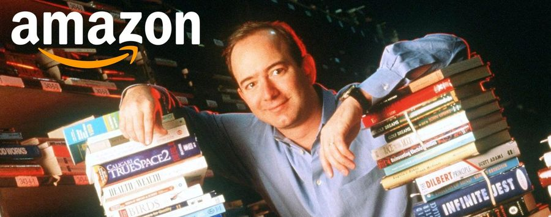
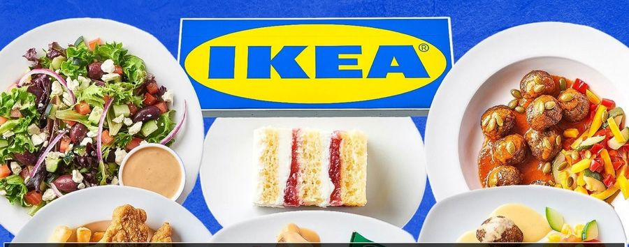

Cruzar el río
El aula es un río. Vuestro equipo tiene que cruzarlo de orilla a orilla pisando solo los folios. Gana el equipo que llega antes con todos sus miembros.
- ●Solo se puede pisar en los folios. Fuera del folio hay agua.
- ●Un folio que nadie toca se hunde: se retira y no vuelve.
- ●Todo el equipo tiene que llegar a la otra orilla.
Duración
20 minutos
Modalidad
Equipos de 4 a 6
Material
Folios: uno menos que personas en el equipo
Gana
El equipo más rápido
- 1.Un minuto para acordar la estrategia antes de salir
- 2.Cruzad. El cronómetro se para cuando llega la última persona
- 3.El equipo ganador explica su estrategia al resto
Segunda vuelta: el mercado cambia
«El entorno ha cambiado. El mercado es más exigente y todos tenéis que adaptaros. No podéis usar la misma estrategia que antes.»
Menos recursos
Un folio menos que en la primera vuelta.
En la empresa: menos presupuesto, menos personal, menos tiempo.
Un cliente con limitaciones
Una persona del equipo cruza con los ojos cerrados.
En la empresa: clientes o trabajadores con necesidades distintas. Obliga a pensar en accesibilidad.
Comunicación restringida
Solo una persona puede hablar durante todo el cruce.
En la empresa: equipos a distancia, turnos, idiomas, jerarquías.

Pregunta a la clase
¿Qué ha pasado en el río?
- 1.¿Qué cambió respecto a la primera estrategia?
- 2.¿Qué fue lo más difícil de las nuevas condiciones?
- 3.¿Qué os ayudó a encontrar soluciones?
- 4.Si estas condiciones fueran reales (mercado, normativas, competidores), ¿qué aprendemos?
Ideas
- ●La estrategia ganadora dejó de servir. No era mala: eran otras condiciones. Lo que funciona hoy no tiene por qué funcionar mañana.
- ●Lo más difícil suele ser la persona con los ojos cerrados. Diseñar para quien tiene una limitación obliga a pensar distinto, y lo que sale suele servir a todos.
- ●Ayuda probar, repartir papeles y escuchar a quien ve el problema desde otro sitio.
- ●En una empresa el entorno cambia de verdad: mercado, normativa, competidores, clientes. Por eso innovar no es una vez, es continuo.
Lluvia de ideas
En equipo, elegid algo que os moleste en el día a día: el transporte, estudiar, la comida del recreo, el móvil, cuidar de alguien, el ordenador que va lento. Es más fácil ver lo que fastidia que inventar algo que mejorar.
Cada pocos minutos aparecerá una técnica nueva. Anotad todas las ideas que salgan y marcad con un ✔ las que os parezcan más potentes.
Duración
25 minutos
Modalidad
Equipos de 4 o 5
Material
Notas adhesivas y rotuladores
Entrega
La mejor idea, presentada en dos minutos
- 1.Elegid el problema: cada uno dice una cosa que le fastidia y el equipo se queda con una (5 min)
- 2.Generad ideas con cada técnica según aparezca; una idea por nota (15 min)
- 3.Elegid la mejor y presentadla: nombre, qué problema resuelve y con qué técnica surgió (5 min)
Seis maneras de sacar ideas

1. Ampliad la idea ¿Y si esto lo llevamos a gran escala o lo hacemos global?
4. Cambiad de contexto ¿Y si aplicamos esta idea a otro sector o a otro tipo de persona?
Pregunta a la clase
¿Qué es innovar?
Es la primera palabra del nombre del módulo. ¿Es lo mismo que inventar? ¿Hace falta tecnología?
Ideas
- ●Innovar no es inventar. Inventar es crear algo que no existía. Innovar es llevar algo nuevo o mejorado al mercado o a la empresa, y que alguien lo use y lo valore.
- ●No hace falta tecnología nueva. Vender de otra forma, organizar el trabajo de otra forma o cambiar el modelo de negocio también es innovar.
- ●Qué haremos aquí. Aprender a detectar oportunidades, generar ideas con método, convertirlas en propuestas y defenderlas. En equipo y con casos reales.
Pregunta a la clase
¿Qué producto o servicio os ha cambiado la vida en los últimos cinco años?
Algo que hoy usáis a diario y que hace cinco años no existía o no usabais.
Ideas
- ●Pagar con el móvil y enviar dinero al instante: la cartera se queda en casa.
- ●Asistentes de inteligencia artificial para escribir, resumir, traducir o programar.
- ●Comprar hoy y tenerlo hoy: la logística que hay detrás es una de las innovaciones más grandes que no se ven.
- ●Vídeo corto: ha cambiado cómo se descubre música, noticias y productos, y cómo venden las empresas.
Presentación del módulo
Qué es este módulo, según el currículo oficial
Lo que se enseña no lo decide el profesor: está publicado. Este módulo es optativo, dura 34 horas y su currículo es la ORDEN EDU/411/2025 de Castilla y León.
"Este módulo profesional tiene como objetivo principal introducir al alumnado en los conceptos básicos de la innovación aplicada al ámbito empresarial del sector productivo relacionado. Además, busca desarrollar habilidades prácticas para identificar oportunidades de mejora e innovación en empresas de dicho sector." Orientaciones pedagógicas, módulo CL32.
Cómo se trabaja, según el currículo
- 1.Clases principalmente prácticas. La teoría es el mínimo para poder hacer la práctica; estas diapositivas son también el material de estudio.
- 2.Proyectos y retos en equipo sobre problemas reales de empresas del sector informático y del entorno.
- 3.Se defiende en clase. Lo que hacéis se presenta y se explica delante de los demás.
- 4.La actitud cuenta. El currículo pide evaluar la actitud hacia la innovación: participar, proponer, escuchar y construir sobre las ideas de los demás.
Presentación del módulo
Los cuatro resultados de aprendizaje
Un resultado de aprendizaje (RA) es algo que tienes que saber hacer al terminar el módulo. Cada RA tiene una lista de criterios de evaluación, que es lo que se comprueba en las prácticas y en las pruebas. La nota se calcula por RA.
Entiendes qué es innovar
Sabes qué es una innovación, de qué tipos hay, por qué hace a una empresa más competitiva y qué aporta a su sostenibilidad.
Ves cómo cambia las empresas
Reconoces el impacto de la innovación en eficiencia, calidad, sostenibilidad y estrategia, y las tecnologías emergentes que están transformando los sectores.
Propones ideas con método
Usas Design Thinking, Lean Startup y el lienzo Canvas para generar ideas, planificarlas y valorar de forma sencilla si son viables.
Analizas empresas reales
Detectas oportunidades de mejora en casos de empresas del sector, diseñas una propuesta, valoras si se puede implantar y la presentas.
Los nombres cortos son nuestros. Los enunciados completos y sus criterios están en la ORDEN EDU/411/2025, de 15 de abril, módulo CL32.
Presentación del módulo
Las cuatro unidades de trabajo
34 horas, 17 sesiones de dos horas. El módulo termina a mitad de la segunda evaluación. De las 17 sesiones, 9 son de práctica en equipo y 2 de defensas.
Presentación del módulo
Cuánto pesa cada cosa en la nota final
Cómo leerla. Cada unidad aporta la nota de su resultado de aprendizaje. La UT3 pesa más porque tiene el doble de sesiones y el proyecto principal del módulo.
Mínimo 5 en cada RA. Si un resultado de aprendizaje queda por debajo de 5, el módulo no se aprueba aunque la media salga. Se recupera solo ese RA.
Presentación del módulo
Cómo se evalúa
60 %
Práctica
Lo que hacéis en el aula, en equipo, y defendéis delante de la clase: talleres, fichas, prototipos, lienzos y presentaciones. Con rúbrica, que incluye la actitud hacia la innovación.
40 %
Prueba
Una prueba corta al final de cada unidad, en clase, sobre estas diapositivas. Preguntas de opción múltiple y casos para clasificar o analizar.

Norma general. Estos porcentajes se aplican dentro de cada resultado de aprendizaje. Lo que no se entrega en el plazo no se recoge.
Inteligencia artificial. En clase no se usa, salvo que se indique expresamente. Los deberes son de dos tipos: para usar IA a propósito, y entonces se entrega también el prompt, o para practicar algo que después se prueba en clase.
Presentación del módulo
Con qué vamos a trabajar
No hay libro. Todo el material de estudio está en estas presentaciones, que se abren en cualquier navegador: en el aula, en casa o en el móvil.
- PresentacionesUna por unidad, con ejercicios interactivos para practicar en casa. Flechas para avanzar, Ctrl+P para guardar en PDF.
- ClassroomEntregas, avisos, plantillas de las prácticas y calificaciones.
- Material de tallerNotas adhesivas, rotuladores, cartulinas y piezas de construcción. Buena parte de la innovación se hace con las manos antes que con el ordenador.
- Documentos y presentacionesGoogle Docs y Slides o Canva para las fichas, los lienzos y las exposiciones, compartidos con el profesor.
- Inteligencia artificialNo está permitida en clase, salvo que se indique lo contrario.